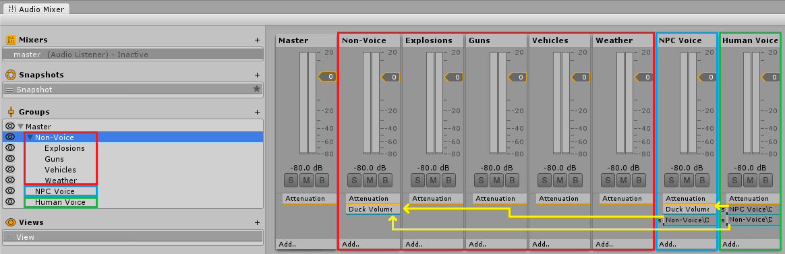
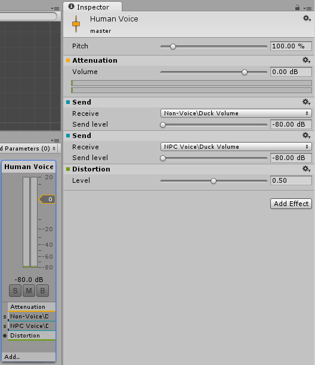

Tutorial: Audio Mixing
Also see this video about audio mixing.
Dissonance does not have any special support built in for audio mixing, because unity already has a powerful mixing system built in which dissonance audio is routed through. You can find out more about the unity audio mixing system here. This tutorial offers advice about the best way to use the unity audio pipeline for VoIP.
General Principles
It can be tempting to mix voice signals in the same way as any other audio signal in your game and to add various sound effects to the voice for realism/immersion. Things such as drowning out teammates with loud gunfire, deafening players when they're hit by a flashbang or adding extreme radio fuzz when the enemy team use jammers might all sound immersive but in reality will just force people not to use the in game VoIP. Any audio mixing done to the voice signal should be done to improve the voice the voice quality.
Volume Ducking
Games frequently have very loud sound effects such as explosions and gunfire which can drown out other sounds in the game. However, it would interrupt conversations if these noises also drowned out the voice signal. A naive solution would be to increase the volume of the voice signal far above the game sounds but doing this would cause clipping and sound terrible. An alternative solution would be to reduce the volume of the game audio far below the voice signal, but doing this would cause the game sounds to lack impact even when no one is talking. The best solution is to play game sounds at full volume when no one is talking but then when someone starts talking simply "duck" the volume so the voice can be clearly heard over the game sounds.

Above is an example audio mixer for a game. Highlighted in red are all the groups of non voice data, highlighted in blue is a groups of NPC voice audio and highlighted in green is a groups of human voice data. If you do not have any groups like this then all you need to add is a single groups of "non-voice" and make sure all the game sounds play to this group. To make dissonance play to the "Human Voice" group you need to modify your playback prefab, simply drag the "Human Voice" group into the AudioSource of the prefab and all voice will play to that group.
The yellow arrows indicate "sends", a send sends audio from one signal processor to another. At the receiving end of the sends is a "Duck Volume" effect, this reduces the volume of the group relative to the volume of the signal it receives via a send. The setup shown above has two volume ducks and three sends. The human voice sends to "Non-Voice" and "NPC Voice", this means than when a human speaks both NPC voices and other sounds get quieter. The "NPC Voice" has a single send to the "Non-Voice" group, this means that when an NPC speaks other sounds get quieter.
Sound Effects
As mentioned above you should be very cautious about applying any sound effects to the voice signal which are not for the purpose of enhancing the voice quality. However there are some situations where applying sound effects to voices could sound good, for example keeping allied communications clean, but adding a subtle radio distortion effect to enemy communications. Applying an effect is very simple, simply click add on the audio group and select the effect you want.

Above is an example of an audio group with a distortion effect applied.